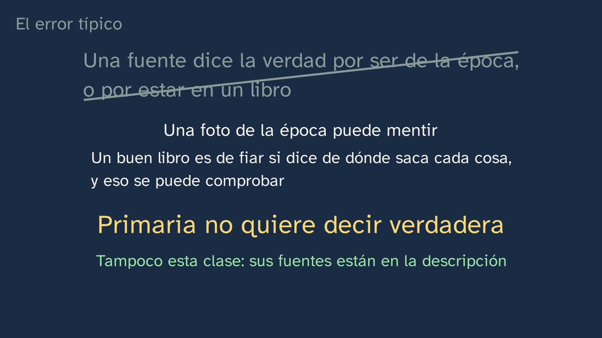
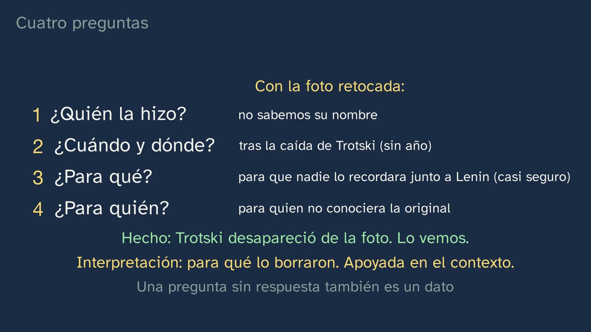

Which of the two photos is lying?
In a nutshell
The class opens the subject with a question from today: if a machine can make, in seconds, a photo of something that never happened, how do we know what really happened? It answers with a photo from a century ago. Moscow, 5 May 1920: Lenin is addressing the troops leaving for the Polish front, and on the steps of the platform stands Trotsky. In another copy of the same photo, Trotsky is gone, and the man who was behind him is wearing an impossible coat. Students predict which is the original and learn how we know: by cross-checking, with a third photo of the same speech held by an archive in Moscow and with the trace left by the retouching itself. Then comes the idea that turns the class round: the retouched photo lies about 1920, but tells the truth about whoever retouched it (Marc Bloch: "a lie, as such, is in its own way a testimony"). From there come the four questions to ask of any source (who made it, when and where, what for and for whom), two moves (context and cross-checking), the difference between fact and interpretation, and a point few textbooks explain: whether a source is primary or not depends on the question you ask it. The typical mistake comes from a real study (Wineburg, 1991): a student with top marks chose the textbook as the most trustworthy document "because it just reports the facts". Before closing, an engraving of Lincoln that carries another politician's body, to make clear that manipulating images is not one country's affair, without treating as equal two cases that are not.
Objective. By the end, students will be able to question a source with four questions (who made it, when and where, what for and for whom), cross-check it against others, tell fact from interpretation in it, and explain why a false source is also true evidence… of something else.
For readers outside Spain: the Bachillerato is the last two years of secondary school (ages 16–18). Contemporary World History is an elective in the first year of the Humanities and Social Sciences track. The video is in Spanish, with English subtitles; the images on this sheet come from the video and keep their Spanish text. The quotations from Bloch are our own translations from the French original.
Curriculum
Spain's Royal Decree 243/2022, Contemporary World History (consolidated text in the Official State Gazette, BOE, checked on 29/09/2026). Our translation of the official Spanish text.
| Element | What the decree says | Where the class works on it |
|---|---|---|
| Core knowledge (block A, "Societies in time") | "The historian's work: historical sources, historiography and narratives of the past. […]" | The whole class: primary and secondary sources, the four questions, context and cross-checking; historiography, with Bloch and with Wineburg's study; and a narrative of the past rewritten by retouching |
| Core knowledge (block C, "Civic engagement") | "Ethical digital citizenship: […] Preventing and resisting disinformation and manipulation." | The hook (today's fabricated images), the retouched photo and the open question. Here it is only glimpsed: the subject comes back to it later |
| Specific competence 2 | "To become aware of the degree of violence, barbarity and destruction of the conflicts of the Contemporary Age, through the use of reliable historical sources, the reading of historiographical texts and the development of one's own arguments that prevent the manipulation of information, in order to face traumatic events of our recent past, prevent the repetition of similar events, acknowledge the victims and defend the application of the principle of Universal Justice." | Its method side: reliable sources, historiographical texts (Bloch) and arguments that guard against manipulation. Violence appears in the biographies (Trotsky, Bloch), but it is studied later in the subject |
| Specific competence 5 | "To identify and recognise the main challenges of the 21st century through advanced processes of searching for, selecting and processing information, and the cross-checking and critical reading of sources, in order to understand the historical phenomenon of globalisation, its impact at the local and planetary level and on people's daily lives, and to show the need to adopt eco-social commitments to meet the Sustainable Development Goals." | Cross-checking and critical reading of sources, and a 21st-century challenge: images anyone can fabricate |
| Specific competence 7 | "To interpret the role that thought and ideologies have played in transforming reality from the origins of the Contemporary Age to the present, through an approach to historiography and to the debates on key topics of history, in order to assess critically the different social, political and cultural projects that arose, the actions carried out and the experiences lived, from the ethical perspective contained in the Universal Declaration of Human Rights." | The approach to historiography: Bloch and his historian's craft; and a state rewriting its own past |
| Criterion 2.1 | "To become aware of the degree of violence, barbarity and destruction reached by the conflicts that have taken place in the contemporary world, as well as of the causes of wars and of the many transformations that occur among the belligerents, through the use of reliable historical sources and of cross-checked data, assessing the social and emotional impact of the use of violence and the role of the international institutions that work for peace and mediation." | Only its method side: the third photo in the archive and the trace of the retouching, two independent pieces of evidence; every date in the class, cross-checked |
| Criterion 5.1 | "To analyse critically the historical phenomenon of globalisation and its impact at the local and planetary level, making use of different sources of information and of their proper selection, validation, cross-checking and processing, preventing disinformation and considering entrepreneurship, innovation and lifelong learning as ways of facing the challenges of a constantly changing economic, social and cultural environment." | Only its method side: validating and cross-checking sources, preventing disinformation. The four questions and the mistake "primary means true" |
| Criterion 7.2 | "To address critically the main key topics of history and of the present through an approach to the main historiographical currents and to the uses made of history, assessing critically the main social, political and cultural projects that have taken place in contemporary history from the ethical perspective contained in the Universal Declaration of Human Rights." | The uses made of history: erasing someone from a photo, and changing the message of a portrait. And a historiographical current: in 1929 Bloch co-founded, with Lucien Febvre, the journal Annales (the class does not say so; it is a good bridge) |
What students bring from lower secondary (ESO): just enough, and Spain's national decree for lower secondary provides it. Geography and History is compulsory in all four years (Royal Decree 217/2022, articles 8 and 9). In years 1 and 2, criterion 1.2 asks for "locating and critically analysing primary and secondary sources as historical evidence", and one item of core knowledge is "Historical and archaeological sources as the basis for building historical knowledge". In years 3 and 4 come "Historical sources as the basis for building knowledge of the contemporary past. Contrasting historians' interpretations" and the "evaluation and cross-checking of the reliability of sources. The problem of disinformation". That is why the class takes for granted the difference between a primary and a secondary source (it retrieves it at 0:41) and reading a timeline. The historical context (who Lenin was, who Stalin was, the revolution of 1917) is given by the class itself on a timeline: the lower-secondary decree does not name the Russian revolution, and this subject studies it in depth later, in the core knowledge "The struggle for freedom, change and revolution in the contemporary era: from the bourgeois revolutions to the socialist revolutions" and "Collective action, mass movements and political leadership in the 20th century: the birth and functioning of democratic and totalitarian regimes".
How the class is built
Video chapters
Eleven and a half minutes, in ten chapters. It follows the channel's learning principles (in Spanish) and what the decree asks of this subject: the historical method "obliges students to use sources rigorously and critically", and cross-checking and interpreting information "make it possible to understand history as a field of knowledge under construction, in continuous revision and change" (introduction to the subject). That is why the class does not describe how to work with sources: it works with one, in front of the student, and then names what it has done. It is the first of the topic's six classes; the second is the first history workshop, in an archive.
| Chapter | What happens | Why this way |
|---|---|---|
| What we'll see | Tristán says hello and introduces the topic on the map of its six classes; one is a history workshop (the magnifying glass). The hook, to camera: today a machine can make, in seconds, a photo of something that never happened; so how do we know what really happened? | Knowing where you are and where you're going organises what you learn. The question is from today; the answer comes with a photo from a century ago. |
| What you already know | What is a primary source? And a secondary one? Pause. The lower-secondary definition: primary, from the period we're studying; secondary, made later from primary ones. "Keep that in mind: in a while we'll give it a twist." | Retrieving what students know, and planting a definition the class will sharpen. |
| Two photos | Moscow, 5 May 1920: two copies of the same photo. What has changed? Which is the original? Pause. Trotsky, head of the Red Army, on the steps of the platform; in the other, he isn't there, and an extremely long coat covers the gap. | Predicting before seeing: students commit to an answer, and looking carefully is already part of the craft. |
| How do we know? | Not by intuition: by comparing. A third photo of the same speech, in the Russian State Archive of Socio-Political History (RGASPI, fond 393, opis 1, delo 205), which cannot be published without permission, and the class says so; and the trace of the retouching. Two different clues: cross-checking. Stop and think: why would anyone erase a man from a photo? | The channel's question, answered with the document. Saying what cannot be shown is also honesty. |
| The man who had to go | A timeline: 1917, 1924 (Lenin dies), 1927 (expelled from the party), 1929 (from the country), 1940 (murdered in Mexico on Stalin's orders). "The most likely explanation": an enemy of Stalin could not appear beside Lenin, not even in the past. And many disappeared from photos. | Context before interpretation, and the interpretation with its degree of certainty. |
| What it tells without meaning to | Into the bin, because it lies? No: it lies about 1920 and tells the truth about whoever retouched it. Bloch: "a lie, as such, is in its own way a testimony" (p. 43) and "what it lets us understand, without having meant to say it" (p. 25). His life: the book written in the middle of the war, the Resistance, the Gestapo, the firing squad, the unfinished book that gives the topic its title. Tristán, to camera: a source is neither believed nor thrown away; it is questioned. | The idea that turns the class round, in its author's words and with its page. Bloch's life places his book in its context, which is exactly what is asked of any source. |
| Four questions | Who made it, when and where, what for and for whom, tried out on the retouched photo. Fact (he disappeared: we can see it) and interpretation (what for: well supported by the context); an unanswered question is also a finding. Context and cross-checking. And the promised twist: the retouched photo is no use for finding out who was in Moscow in 1920, but it is an excellent primary source on how the past was rewritten. | Intuition first, then the method; a fully worked example, with the photo the student already knows. The opening definition is sharpened, not swapped for another. |
| How historians read | Wineburg (1991): eight historians and eight high-achieving students in their final year, thinking aloud over the same documents. Looking at where a document came from before reading it: historians, in 98% of cases; students, in 31%. They didn't know more: the method set them apart. The typical mistake: a student with top marks chose the textbook as the most trustworthy document. | The typical mistake, with the research that documents it, and taken apart with what the class has already shown: a photo from the period can lie. "Not even this class" escapes the four questions. |
| Not just one country | The Lincoln engraving published in New York around 1865, according to the Library of Congress, which holds it: Lincoln's head on the body of John Calhoun, from an engraving of 1852. Stop and think: what else changed on the table, and why? The papers. We know of no document that says why, but the source tells us, without meaning to, that it is a composite and that its maker cared about the message. Is it the same as the Trotsky case? No, and the class says why. | An example with gaps, which the student completes. The comparison, without equating: a state erasing a condemned man is not a publisher bringing out a portrait. |
| Practice and keep thinking | Recap with Bloch: texts "only speak when you know how to question them" (p. 26). Three exercises, one with another pair of Soviet photos; the open question about fabricated images; and the announcement of class 2, the first workshop. | Spaced practice: the solutions open the next class. The open question is also in the video's comments. |

A plan for a 50-minute lesson
| Minutes | What to do |
|---|---|
| 0–5 | No video: the hook question, in writing and in one sentence. If a machine can make, in seconds, a photo of something that never happened, how do we know what really happened? Keep it for the end (it is on the worksheet). |
| 5–12 | Video from 0:00 to 2:46. Pause at 0:54 (what is a primary source?: half a minute to answer in writing, then carry on and compare with the video), at 1:40 (what has changed and which is the original?; above all, each pair says how they would find out) and at 2:46 (why erase someone from a photo?; one hypothesis per pair, which the teacher writes on the board without correcting it). |
| 12–19 | Video from 2:46 to 6:47: Trotsky's fall, Bloch, Tristán's midpoint, the four questions and the twist on primary sources. Back to the hypotheses on the board: which one holds up against the timeline? Which is a fact and which an interpretation? |
| 19–24 | Video from 6:47 to 8:21: Wineburg's study and the typical mistake. Out loud: which document would you have put first, and why? |
| 24–39 | The activity: the two engravings, questioned before hearing what the class says about them. |
| 39–44 | Video from 8:21 to 9:50: each pair compares what they found with what the video says (they have already done its pause at 8:57). Is it the same as the Trotsky case? |
| 44–50 | Video from 9:50 to the end (11:29). Reread the sentence from the start: would you change it? The exercises, for homework with the worksheet. |
Typical mistakes and how they are handled
The first three are documented by research on history teaching, with their study; the other two are confusions the design anticipates.
- "A primary source tells the truth", and its relative, "the textbook just reports the facts". The class tackles it head-on (7:29), with Wineburg's study, on documents about the battle of Lexington (1775): "Darrel", a student with a 4.0 grade point average, the top mark, "rated the textbook as the most trustworthy of the eight documents" because it was "just reporting the facts" (Wineburg, 1991, p. 501); the historians ranked that same excerpt last, "even less trustworthy than an excerpt from a fictional work", Howard Fast's novel April Morning, because it contradicted primary accounts from both the British and the American sides (p. 500). The class takes it apart with what the student has just seen: a photo from the period can lie. "Primary" does not mean "true"; in the words of Cornell University Library, "calling an item a primary source does not mean that the perspective presented by it is automatically true or accurate". And the other half, worth keeping: a secondary source is not worse for being secondary; a good history book is trustworthy because it says where it gets each thing from, and that can be checked.
- "If it lies, it's useless: into the bin". It is the trap of someone who has just learned to be suspicious. Peter Lee describes it like this: "Students who decide that we cannot rely on reports because they are biased or give only opinions are almost back to square one" (Lee, 2005, p. 37). And he adds the way out: only when students understand that historians can ask sources questions they were not designed to answer are they freed from depending on truthful testimony (p. 37). That is Bloch's idea, and the class gives it in the chapter "What it tells without meaning to" (3:30): the retouched photo lies about 1920 and is first-hand evidence of how the past was being rewritten.
- "Primary" and "secondary" as fixed labels on a document. The lower-secondary definition ("from the period we're studying") already contains the answer, but hardly anyone reads it that way. The class does so at 6:12: the same photo is no use for finding out who was in Moscow in 1920 and is an excellent primary source on how the past was rewritten. Cornell University Library says the same: "what counts as a primary source is also determined by what questions you're asking". And in Ashby, Lee and Shemilt's (2005) model of progression in students' ideas about historical evidence, the idea that "reliability is not a fixed property of a source, and the weight we can place on any piece of evidence depends on what questions we ask of it" only arrives at the fifth of its six levels (p. 167). Exercise 1 puts it to the test.
- Taking an interpretation for a fact, or the reverse. Asked why Trotsky disappeared, many answer "because Stalin had him erased", as if it were a fact. We know of no written order about this photo: what we know is that, after his fall, his image was removed from widely distributed reproductions (Newseum, 1999), and that supports the interpretation, which the class gives with its degree: "the most likely explanation", "almost certainly". It is worth keeping this apart from another fact that is documented: that Trotsky was murdered in 1940 on Stalin's orders. The opposite mistake is to think that, without a written order, nothing can be said. Historians argue with degrees of certainty and say which is which. The worksheet exercise "Fact or interpretation?" practises it.
- "Manipulating images is what dictatorships do", or the reverse, "everyone does the same". The Lincoln engraving (8:21) takes apart the first: in New York too, a portrait was published with someone else's body. The class takes apart the second straight away (9:31): a state erasing a condemned man from history is not the same as a print publisher bringing out a portrait. What they have in common is that the image shows something that didn't happen that way, and that the four questions work just as well. If the debate drifts towards which regime is worse, bring it back to the method: the class compares sources, not political systems, and judging the past is class 6 of the topic.

Questions and solutions
Stop and think (in the video)
- What is a primary source? And a secondary one? (0:41) What the video answers straight away: a primary source comes from the period we're studying (a letter, a photo, a newspaper, a law); a secondary source is made later by someone, based on primary ones (a history book, a documentary, this very class). Answers like "the original" or "an eyewitness's" are fine, but it is worth stressing the key phrase, "from the period we're studying", because it is what makes the twist at 6:12 possible.
- They look like the same photo, but they aren't identical. What has changed? And which one do you think is the original? (1:26) In the one on the left, on the steps next to the platform, there is a man in uniform, with a cap and a moustache: Leon Trotsky, the head of the Red Army. In the one on the right he isn't there, and the man who was behind him wears an extremely long coat that covers the gap. The original is the one on the left. The best answers go beyond "it looks older": they point to a trace (the coat) and, better still, say how they would check (by looking for another photo of the same moment). The video does so at 2:00: a third photo of the same speech, taken at a different moment, in RGASPI (fond 393, opis 1, delo 205), in which Trotsky is on the steps too. Teachers can view it on the archive's portal (link in the sources); what the archive does not allow is publishing it without permission, which is why the class does not show it. Two warnings, in case students search on their own: another, later version circulates in which Kamenev and others also disappear, which the class does not show because there is no free copy; and some copies date the photo 1 May, an error against the archive's record and Lenin's Collected Works, which give 5 May 1920.
- Why would anyone erase a man from a photo? (2:32) The video gives the context (2:46): Trotsky had been, together with Lenin, one of the leaders of the revolution of 1917; Lenin died in 1924, and in the struggle to succeed him Trotsky lost to Stalin; he was expelled from the party in 1927, from the country in 1929, and in 1940 he was murdered in Mexico on Stalin's orders. "The most likely explanation" is that an enemy of Stalin could not appear beside Lenin, not even in the past; and he was not the only one (King, 1997). Hypotheses like "to erase him from history" or "because he had fallen from favour" are on the right track; they are better if they say they are hypotheses and what would confirm them.
- Should we throw the retouched photo in the bin, because it lies? (3:30) No. It lies about 1920, because Trotsky was there; but it tells the truth about something else: that later someone needed to erase him. Bloch: "A lie, as such, is in its own way a testimony" (Apologie pour l'histoire ou Métier d'historien, ch. III, p. 43 of the 1952 edition; in the original, "Surtout un mensonge, en tant que tel, est à sa façon un témoignage"). And what interests historians most, even in documents made on purpose to tell something, is "what it lets us understand, without having meant to say it" (ch. II, p. 25: "ce qu'il nous laisse entendre, sans avoir souhaité le dire"). The translations are ours. If someone asks who shot Bloch: the class does not say, because the sources consulted disagree (German soldiers, according to the Maitron biographical dictionary; Gestapo men, according to the French Wikipedia). A good example of a question without a sure answer.
- Look at the table to see what else changed, and think about why. (8:42) The three papers. On Calhoun's engraving they said "Strict Construction", "Free Trade" and "The Sovereignty of the States", the ideas he stood for; on Lincoln's, "Constitution", "Union" and "Proclamation of Freedom". The engraver didn't just change the head: he changed the message. Why? We know of no document that says so: neither the Library of Congress nor the other sources consulted give the engraver's intention. What the source does tell without meaning to: that it is a composite, and that whoever made it cared about the message, because they took the trouble to change it.

From the student worksheet
- Before you start: how do we know what really happened? There is no right answer: it is their starting point. They reread it at the end of the class. The best revisions add something of the method (knowing where the image comes from, looking for another independent source, telling what you see from what you interpret); changing your mind for a good reason is a success.
- While you watch the video. These are the "stop and think" questions above, in the video's order.
- The four questions, on the retouched photo. The class's table (5:07): who made it, we don't know their name (nor is the original certain: it is attributed to the photographer Grigori Goldstein, but the archive's record does not name him, which is why the caption in the video says "attributed"); when and where it was retouched, we don't know the year, but we do know it was after Trotsky's fall (the sources consulted disagree: the 1930s, the Stalin era, an album of 1970); what for, almost certainly so that nobody would remember him beside Lenin, an interpretation with no known written order, supported by the context; for whom, for anyone who saw it without knowing the original; and what it tells without meaning to, that later someone needed to erase him: it is first-hand evidence of how the past was being rewritten. The column for the Lincoln engraving is the activity (below, with its answers). It is worth rewarding those who mark how they know each answer and write "not known" when it isn't known: that is a finding.
- Fact or interpretation? 1) "Trotsky is not in the retouched photo": fact; you can see it by comparing the two copies. 2) "The photo was retouched so that nobody would remember Trotsky beside Lenin": well-supported interpretation; there is no known written order, but the context supports it. 3) "Trotsky was expelled from the Soviet Union in 1929": fact, dated and confirmed in several sources. 4) "Stalin gave the order to retouch this photo": unsupported interpretation; we know of no order about this photo, and the fact that Stalin ordered Trotsky's murder does not prove who ordered this retouching. 5) "On the table in the Lincoln engraving you can read 'Union'": fact; it can be read on the print. 6) "The engraver reused Calhoun's body to save himself work": interpretation not supported by the sources consulted; it is possible, but none says why he did it, and evidence would have to be found. Items 4 and 6 teach the most: they sound like facts and are not.

Practice (the solutions open class 2)

-
Is a textbook from 1950 a primary or a secondary source? It depends on what you want to find out with it. If you are studying the topic it covers (the French Revolution, for example), it is secondary: written later, from other sources, and old as well, so it is worth checking it against more recent research. If you are studying how history was taught in 1950 (what students were told, what was left out, in what words), it is primary: it comes from the period you are studying. It is the same reasoning as with the retouched photo (6:12). Criteria: both answers, each with the question that makes it true; the definition used properly ("from the period you're studying"); and, for a high mark, asking it the four questions (who wrote it, for whom, who decided what went in) or saying what it might tell without meaning to, such as what it leaves out. Example: "If I want to know what the French Revolution was like, it's secondary, and from 1950: I'd check it against books from now. If I want to know what students learned in 1950, it's primary, because it's from that period; and I'd be as interested in what it says as in what it leaves out."
-
Another pair of Soviet photos (the original, from April 1937): what has changed? What would you ask it to find out why? What has changed: in the top one, the original, Voroshilov, Molotov, Stalin and, on the right of the photo, a young man in uniform and cap, Nikolai Yezhov, are walking along the Moscow–Volga canal. In the bottom one, Yezhov has disappeared, and in his place is the water of the canal (Newseum, 1999; Tate Etc., no. 8, 2006). The questions: who was the man erased? (Yezhov headed the Soviet political police, the NKVD, from September 1936 to November 1938; he was arrested on 10 April 1939 and shot in February 1940; the exact day varies by source, from the 2nd to the 6th); what happened to him after April 1937?; who retouched the photo, and when and where was the retouched version published? (the sources consulted do not say: as with Trotsky, "not known" is a finding); what for? (interpretation: the same pattern as with Trotsky; whoever falls from favour disappears from the photos); for whom?; and which other photos of him were changed? Criteria: the change, described precisely (who is missing and what replaces him); at least three well-formed questions, including who he was and what happened to him; and keeping what can be seen (fact) apart from why it may have been done (interpretation). Students don't need to know who Yezhov was to ask good questions: knowing how to ask is the exercise. If someone looks the photo up on Wikimedia Commons, they will see that the file title says "Volga–Don Canal": according to Jansen and Petrov (2002, p. vii) and the Newseum, it is the Moscow–Volga canal. Even an open archive gets a caption wrong, and that too gets cross-checked.
-
Find an old family photo at home, ask it the four questions and note down what it tells you without meaning to. It is open-ended: it has no single answer, but it does have better and worse answers. Criteria: the four questions answered, each saying how they know (it's written on the photo or on the back, someone told me, I infer it from a detail, or it's not known); fact kept apart from interpretation; at least one thing the photo tells without meaning to (the clothes, the place, who is there and who is missing, whether it is posed or spontaneous, what people chose to photograph); and, for a high mark, a cross-check with another source (a relative's account, a written date, another photo from the same day). An invented example of a good answer: "A black-and-white photo of my grandparents' wedding. Who made it? On the back there's the stamp of a photography studio: a professional photographer. When and where? My grandmother says 1968, in her village; it isn't written down, so it's her testimony, not something the photo says. What for? To remember the wedding and give copies away (she told me). For whom? For the family. What it tells without meaning to: everyone is dressed up and posing; I think it was a photo for showing, not for recording an ordinary day, but that's my interpretation. And two of my grandfather's brothers aren't in it: the photo doesn't say why; my grandmother says they had already left to work abroad." Two points of care: the photo stays at home (describing it is enough; there is no need to bring or share images of the family), and anyone without family photos can use an old photo of their town or neighbourhood from a digital archive or newspaper library, which is what they will do in class 2.

Keep thinking. Today anyone can make a photo of something that never happened. How will the historians of the future know what really happened in our time? It has no textbook answer, and neither the video nor this sheet gives its own. Some pointers to guide the debate without closing it:
- The video's two clues. There were two ways of telling which was the original: the trace of the retouching (the impossible coat) and another independent source (the third photo in the archive). Which of the two would hold up better against an image fabricated today? Why?
- Separate two questions. One is how we will know whether a particular image is authentic. The other is what our fake images will tell the historians of the future. If "a lie, as such, is in its own way a testimony", what will today's fakes be a testimony of? Of who made them, of what they wanted us to believe?
- What weighs more. Will a technique that certifies where each image comes from be enough? Or will the method, and the archives that keep documents with their provenance (class 2), weigh more? And what happens if, for fear of the fake, we stop believing the true as well? That is mistake 2, in its digital version. The teacher moderates and does not give a verdict.
- A fact, not an opinion: this class was written by an AI and reviewed by a person, and its sources are in the video's description. What would the four questions say about it?

A classroom activity
Two engravings, questioned before hearing the class (about 15 minutes, in pairs, before watching the chapter "Not just one country", which starts at 8:21). It is the move of the history workshops, in miniature: students question the document before hearing the interpretation.
Materials: the two engravings from the US Library of Congress, projected or printed, which can be downloaded in full with no known restrictions on publication: "Abraham Lincoln", by William Pate, and "John C. Calhoun", by A. H. Ritchie (links in the sources). Without saying yet what they are or that they are related. And the student worksheet (its table of the four questions).
- Look without interpreting (3 minutes). Harvard Project Zero's "See, Think, Wonder" routine (Ritchhart, Church and Morrison, 2011): each pair first notes down only what can be pointed at with a finger in each engraving, then what they think and what they wonder. Almost every pair discovers on its own that the body, the hand and the table are the same; if not, ask them to compare the pose.
- The four questions (5 minutes; criterion 5.1). On the Lincoln engraving, each pair fills in their column of the table and marks how they know each answer: I see it (S), a record or source says so (R), I infer it from the context (C), or it's not known (?). The teacher gives the catalogue details only to those who ask: "New York, published by William Pate, [1865?]".
- The catalogue is a source too (3 minutes). The teacher reads out the Library of Congress note: "The head of Abraham Lincoln is superimposed on the figure and background of an earlier print by A.H. Ritchie showing John C. Calhoun, 1852". Questions: who writes that note, and how do they know? What does the question mark in "[1865?]" say? (that the date is not certain). And one the class does not ask: Lincoln was assassinated in April 1865. Was the engraving published before or after? The sources consulted do not say: note it down as an unanswered question.
- Fact or interpretation (3 minutes; criterion 7.2). Each pair writes two sentences about the Lincoln engraving, one fact and one interpretation, and labels them. For example: "Fact: on the table you can read 'Union'. Interpretation: whoever made it wanted to present Lincoln as the defender of the Union."
- Pooling (1–2 minutes). The teacher collects on the board the hypotheses about what it was for, without accepting any, and asks of each what evidence would confirm it. Then, the video from 8:21 to 9:50.
The Lincoln column, completed: who, William Pate, engraver and publisher in New York, according to the catalogue (R), on a figure engraved earlier by A. H. Ritchie; when and where, New York, around 1865, with a question mark (R), and whether before or after the assassination is not known (?); what for, not known (?), and anything said is a hypothesis; for whom, for the public who would see or buy the print, a reasonable interpretation because a publisher brought it out (C); what it tells without meaning to, that it is a composite and that whoever made it cared about the message, because they changed the papers (S and C).
For teachers: we do not know what the composite was for: neither the Library of Congress nor the other sources consulted give the engraver's intention, and that is the activity's best lesson. Hypotheses will come up (selling a portrait of the president, a tribute after his death, saving the work of drawing a new body); all are valid as hypotheses and none as fact. Many will connect "Proclamation of Freedom" with the Emancipation Proclamation, which Lincoln issued on 1 January 1863: it is a reasonable reading, but it is an interpretation, because the print only says "Proclamation of Freedom". Nor is there a single date for the engraving: the Library of Congress dates it "[1865?]" and Hany Farid, in his compilation "Photo Tampering Throughout History", "circa 1860"; that is why the class attributes the date to the Library. And if someone concludes that "it's the same as the Trotsky case", the video answers at 9:31: it isn't, even though the four questions work just as well.

Another option: tracking down a photo (15 minutes, in pairs, with a computer or phone; best after correcting exercise 2, and it works on criteria 2.1 and 5.1). Each pair gets an image with the caption it circulates with, and follows four steps: copy the caption exactly and say where it circulates; find which archive or institution holds the original and what its record says; give a verdict (the caption is right; right, but incomplete; wrong; or it cannot be known); and ask who spreads it and why. Four checked cases, with their solution:
- "Lenin addresses the troops, 1 May 1920": wrong on the date. The RGASPI record (fond 393, opis 1, delo 205) and Lenin's Collected Works (vol. 31, pp. 127–128) give 5 May 1920.
- "Stalin and Yezhov along the Volga–Don Canal" (the file title on Wikimedia Commons): wrong on the place. According to Jansen and Petrov (2002, p. vii) and the Newseum (1999), it is the Moscow–Volga canal, in April 1937.
- "Portrait of Abraham Lincoln": right, but incomplete. It is a composite engraving: Lincoln's head on the body from an engraving of Calhoun of 1852 (Library of Congress), and its date is uncertain.
- "The photo of Lenin without Trotsky, retouched on Stalin's orders in the 1930s": cannot be known. We know of no written order about this photo, and the sources consulted disagree on when it was retouched.
Sources
- Royal Decree 243/2022, consolidated text (BOE, in Spanish): https://www.boe.es/buscar/act.php?id=BOE-A-2022-5521.
- Lower secondary (ESO): Royal Decree 217/2022, consolidated text (BOE, in Spanish): https://www.boe.es/buscar/act.php?id=BOE-A-2022-4975 (articles 8 and 9, and Geography and History in annex II).
- The photo of Lenin of 5 May 1920: record of the Russian State Archive of Socio-Political History (RGASPI, fond 393, opis 1, delo 205): https://lenin.rusarchives.ru/dokumenty/vi-lenin-s-tribuny-na-ploshchadi-sverdlova-vystupaet-s-rechyu-na-parade-voysk; Lenin, Collected Works, vol. 31, pp. 127–128: https://www.marxists.org/archive/lenin/works/1920/may/05.htm.
- D. King, The Commissar Vanishes: The Falsification of Photographs and Art in Stalin's Russia (1997), and its exhibition at the Newseum (1999): https://web.archive.org/web/20010215011737/http://www.newseum.org:80/berlinwall/commissar_vanishes/. P. Eaves, "Traces of Human Tragedy: The David King Collection", Tate: https://www.tate.org.uk/research/features/human-tragedy-david-king-collection.
- Yezhov: M. Jansen and N. Petrov, Stalin's Loyal Executioner: People's Commissar Nikolai Ezhov, 1895–1940 (2002), p. vii; Memorial; Tate Etc., no. 8 (2006); and the Newseum, above.
- M. Bloch, Apologie pour l'histoire ou Métier d'historien (1949; 2nd ed., Armand Colin, 1952), ch. II, pp. 25 and 26, and ch. III, p. 43: http://classiques.uqac.ca/classiques/bloch_marc/apologie_histoire/bloch_apologie.pdf. In English: The Historian's Craft. The translations of the quotations are our own, literal and checked against the original.
- The life of Marc Bloch: Le Maitron, "BLOCH Marc, Léopold, Benjamin": https://maitron.fr/bloch-marc-leopold-benjamin/; French Ministry of the Armed Forces, Chemins de mémoire: https://www.defense.gouv.fr/chemins-memoire/histoire-memoires/personnalites/personnalites-lettre-lettre/marc-bloch. The journal Annales, founded in 1929 by Marc Bloch and Lucien Febvre: https://annales.ehess.fr/.
- S. Wineburg (1991). On the reading of historical texts: notes on the breach between school and academy. American Educational Research Journal, 28(3), 495–519, pp. 497–501 and 510: https://doi.org/10.3102/00028312028003495.
- P. J. Lee (2005). Putting principles into practice: understanding history, p. 37; and R. Ashby, P. J. Lee and D. Shemilt (2005). Putting principles into practice: teaching and planning, p. 167. Both in National Research Council, How Students Learn: History, Mathematics, and Science in the Classroom: https://doi.org/10.17226/10126.
- What a primary source is: Cornell University Library: https://guides.library.cornell.edu/primary.
- The engravings, Library of Congress: "Abraham Lincoln", by William Pate [1865?]: https://www.loc.gov/item/2003654314/; "John C. Calhoun", by A. H. Ritchie, 1852: https://www.loc.gov/item/2003679757/. The Emancipation Proclamation (1 January 1863): National Archives: https://www.archives.gov/milestone-documents/emancipation-proclamation. Lincoln's assassination (April 1865): National Park Service, Ford's Theatre: https://www.nps.gov/foth/index.htm; Miller Center (University of Virginia): https://millercenter.org/president/lincoln/death-of-the-president.
- The "See, Think, Wonder" routine (Project Zero, Harvard): https://pz.harvard.edu/resources/see-think-wonder.
- Public-domain images or with no known restrictions: the two photos of Lenin, from Spaarnestad Photo (Wikimedia Commons): https://commons.wikimedia.org/wiki/File:Lenin_houdt_een_speech,_naast_hem_staat_Trotski,_SFA001018177.jpg and https://commons.wikimedia.org/wiki/File:Lenin_houdt_een_speech,_vlakbij_stond_Trotski_maar_die_is_weg_-geretoucheerd,_SFA001018178.jpg; the April 1937 photos, with and without Yezhov (Wikimedia Commons): https://commons.wikimedia.org/wiki/File:Nikolai_Yezhov_with_Stalin_and_Molotov_along_the_Volga%E2%80%93Don_Canal,_original.jpg and https://commons.wikimedia.org/wiki/File:Stalin_and_Molotov_along_the_Volga%E2%80%93Don_Canal,_Nikolai_Yezhov_removed.jpg.


About this class
GinCol Lab is a free science channel for curious minds. Tristán is an illustrated character, not a real person, and his voice is synthetic: computer-generated with Microsoft Azure AI Speech and not imitating any known person. The script and this sheet are written by an AI (Claude, by Anthropic) and reviewed by a person before publishing. Every fact has been checked in two sources or in the original, every quotation in its author's work, and the photos and engravings shown are real, in the public domain or with no known restrictions. This English version was translated by the same AI. If you spot a mistake, tell us: learning also means correcting.
This sheet is published under a Creative Commons Attribution 4.0 licence: you can copy it, adapt it and use it in your classroom, crediting GinCol Lab.
How to cite this sheet
GinCol Lab (2026). Which of the two photos is lying? GinCol Lab teacher sheet: Contemporary World History · 1st year of Bachillerato · The historian's craft · Class 1 of 6. https://gincollab.github.io/aula/en/historia-mundo-contemporaneo/t01-c1/. CC BY 4.0.
GinCol Lab teacher sheet · CC BY 4.0 · Source and errata